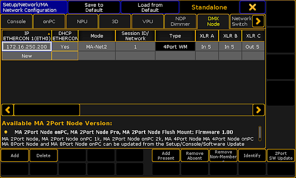
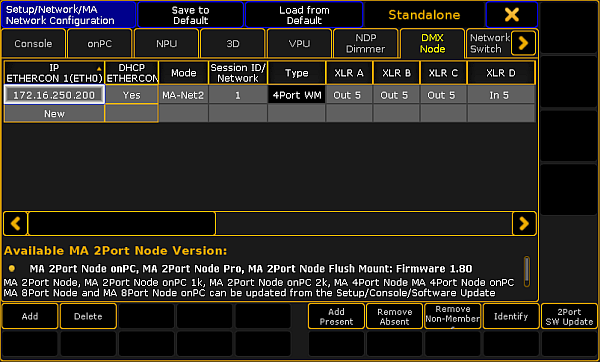

The following example displays how to configure the nodes as splitters or mergers on a console.
Configure the Node as a Merger
If the node is used as a merger, it is possible to merge one or two DMX inputs into one universe.
To configure the node as a merger:
-Add an MA xPort Node to the network configuration.
For more information see Adding devices to your session.
Select the same universe for all ports in the pop-up Configure DMX Port (MA-Net2 Mode).
For more information see Configure nodes on the console.
-Then, set a maximum of 2 ports to the port mode "IN" and 1 port to the port mode "OUT".

Configure node as a merger
Important:
If the xPort node is used as a merger, it must not be used in a session or connected to other xPort nodes via the network.
You have successfully configured the node as a merger.
Configure the Node as a Splitter
To configure the node as a splitter:
-Add an MA xPort Node to the network configuration.
For more information see Adding devices to your session.
Select the same universe for all ports in the pop-up Configure DMX Port (MA-Net2 Mode).
For more information see Configure nodes on the console.
-Then, set at least 3 ports to the port mode "OUT" and 1 port to the port mode "IN".

Configure node as splitter
You have successfully configured the node as a splitter.